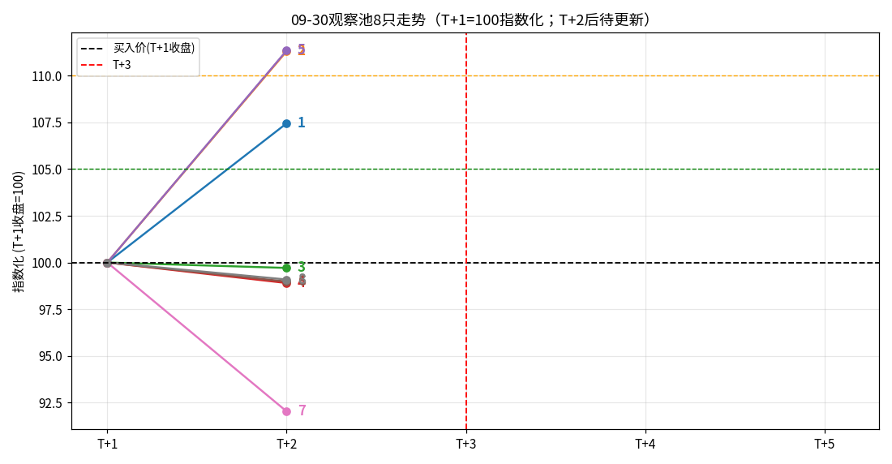

看多周期（10日、5日、3日、今日涨幅）：
强势股票观察池（只记录符合强势趋势条件、值得继续观察的股票，不推荐）。
筛选标准（强势趋势条件）：当日涨幅 > 0，且 10日涨幅 > 5日涨幅 > 3日涨幅 > 当日涨幅。
来源（双来源，各做一张表，不合并去重）：①四策略池近 20 个交易日（2026-07-31~2026-10-08）去重 238 只；②程序复盘报告 80 条明细（去重 39 只）。
点击股票代码可在 TradingView 查看K线走势（外部免费看盘）。
| 序号 | 代码 | 名称 | 收盘 | 当日 | 3日 | 5日 | 10日 | 距MA5 | 距MA50 |
|---|---|---|---|---|---|---|---|---|---|
| 1 | SZ002242 | 九阳股份 | 13.75 | +10.00% | +33.11% | +40.88% | +48.01% | +19.92% | +49.70% |
| 2 | SZ002959 | 小熊电器 | 37.5 | +5.57% | +11.01% | +18.30% | +19.01% | +7.80% | +12.80% |
| 3 | SZ002030 | 达安基因 | 5.96 | +3.65% | +6.05% | +6.43% | +14.18% | +4.05% | +7.88% |
| 4 | SH603768 | 常青股份 | 12.22 | +0.66% | +5.34% | +5.62% | +8.82% | +2.97% | +7.70% |
| 5 | SH600817 | 宇通重工 | 9.85 | +0.61% | +2.39% | +3.58% | +5.46% | +1.48% | +3.91% |
原因浅析不是因果证明，只是公开信息层面的可能催化。以下原因多为概念/事件级催化，粒度细于二问的大板块分析，多归属于二问中的强势方向；个股事件（如公告）则独立于板块。
| 序号 | 股票 | 上涨原因浅析 | 消息层级 |
|---|---|---|---|
| 1 | 九阳股份（SZ002242） | 据经济观察网（09-30）报道：近期受机器人、AI 概念及合作传闻影响股价连续异动，已发布股价异动公告；市场流传的与华为战略合作传闻，公司 09-29 晚已明确否认。 | 个股公告 |
| 2 | 小熊电器（SZ002959） | 无明确公开消息 | 无公开消息 |
| 3 | 达安基因（SZ002030） | 无明确公开消息 | 无公开消息 |
| 4 | 常青股份（SH603768） | 无明确公开消息 | 无公开消息 |
| 5 | 宇通重工（SH600817） | 无明确公开消息 | 无公开消息 |
| 序号 | 代码 | 名称 | 收盘 | 当日 | 3日 | 5日 | 10日 | 距MA5 | 距MA50 |
|---|---|---|---|---|---|---|---|---|---|
| 1 | SZ002242 | 九阳股份 | 13.75 | +10.00% | +33.11% | +40.88% | +48.01% | +19.92% | +49.70% |
| 2 | SZ301234 | 五洲医疗 | 147.98 | +9.09% | +15.60% | +21.30% | +37.01% | +10.69% | +51.35% |
| 3 | SZ300239 | 东宝生物 | 5.53 | +1.28% | +2.79% | +4.54% | +13.79% | +1.88% | +9.50% |
原因浅析不是因果证明，只是公开信息层面的可能催化。
| 序号 | 股票 | 上涨原因浅析 | 消息层级 |
|---|---|---|---|
| 1 | 九阳股份（SZ002242） | 同表A：机器人/AI 概念催化致连续异动，已发布股价异动公告；华为合作传闻已否认（据经济观察网 09-30）。 | 个股公告 |
| 2 | 五洲医疗（SZ301234） | 据界面新闻（08-27，经东方财富转载）报道：收购半导体公司旋智科技的预案让股价四个交易日翻倍、1个月涨两倍；深交所 09-22 起将其列为重点监控证券（监控期至 10-14）。反向信息：界面新闻提示并购尚未完成评估、估值飙升存不确定性。 | 个股公告 |
| 3 | 东宝生物（SZ300239） | 无明确公开消息 | 无公开消息 |
T+0=09-30（入选日），T+1=10-08（买入日），T+1~T+5 为持有期。8 只。
| 序号 | 代码 | T+2涨跌* | 期间最高 | 最高日 | 至最高涨跌 |
|---|---|---|---|---|---|
| 1 | SH688137 近岸蛋白 | +7.45% | 161.95 | T+2 | +7.97% |
| 2 | SZ301190 善水科技 | +11.31% | 44.88 | T+2 | +13.56% |
| 3 | SH688265 南模生物 ⚠️冲高回落 | -0.29% | 65.56 | T+1 | +7.28% |
| 4 | SH688185 康希诺 ⚠️冲高回落 | -1.10% | 108.0 | T+1 | +8.48% |
| 5 | SZ301218 华是科技 | +11.35% | 79.0 | T+2 | +16.18% |
| 6 | SZ301080 百普赛斯 ⚠️冲高回落 | -1.02% | 138.25 | T+1 | +11.98% |
| 7 | SH600418 江淮汽车 ⚠️冲高回落 | -7.97% | 26.57 | T+1 | +7.48% |
| 8 | SH600006 东风股份 | -0.91% | 5.65 | T+1 | +2.73% |
机会统计（截至 T+2）：+5% 机会 7只（87.5%）· +10% 机会 3只（37.5%）· +15% 机会 1只（12.5%）· T+2 收盘上涨 3只 / 亏损 5只
💡 87.5% 有 +5% 机会，但拿到 T+2 已有 5 只亏损——选票没问题，全是卖的时机问题。南模生物、康希诺、百普赛斯、江淮汽车均出现明显冲高回落。

8只走势（T+1=100指数化；编号1-8对应表序；黑虚线=买入价，绿线=+5%，橙线=+10%，红虚线=T+3；T+3起待更新）
本期 8 只新入池（表A 5 只、表B 3 只）。失败记录不删除。